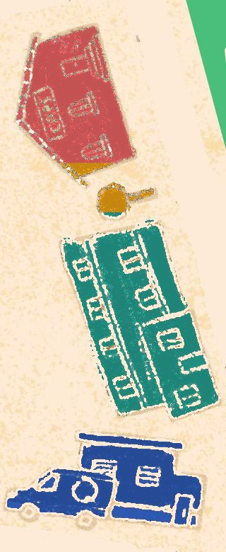
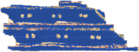
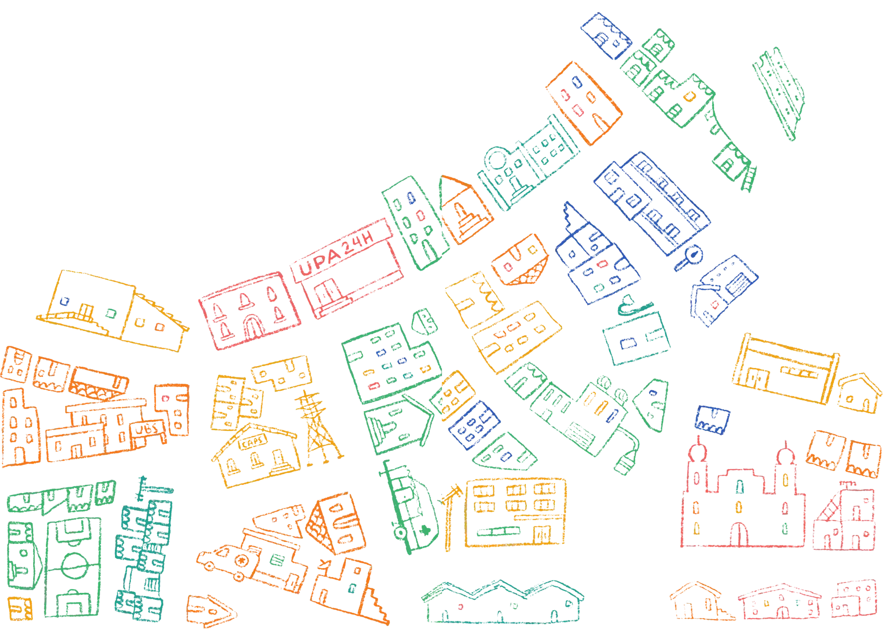

O SUS é público, gratuito e é seu. Bora percorrer a trilha e descobrir onde buscar cuidado antes da hora do pânico?

Mais de 8 milhões de jovens atendidos na atenção primária em 2020
Jovem de 15 a 29 anos tem necessidades próprias: entrada no trabalho, início da vida sexual, novas famílias. Saúde é mais do que combater doença. É promoção, prevenção e cuidado.
Fonte: Atlas das Juventudes, 2021, p. 210
O SUS é como uma escada: quanto mais complexo o problema, mais alto o degrau. As cores são as mesmas do tabuleiro. Toque em cada degrau.
Todos esses lugares são SUS. Toque numa parada ou jogue o dado para andar com o peão pela trilha.

UBS FluviaisBarcos com equipes de saúde que atendem a população ribeirinha da Amazônia Legal e do Pantanal.Escolha a situação e veja qual serviço procurar. Usar a porta certa evita fila na emergência e garante cuidado antes do problema crescer.
O que levou jovens ao SUS em 2020 e os sinais de alerta sobre saúde mental, alimentação e trabalho.
Fonte: Atlas da Juventude, 2021, p. 210
Fonte: Juventudes do Agora, 2022, p. 102
Só 39,2% dos jovens comem verduras e legumes com regularidade, e 24,3% tomam refrigerante ou suco artificial com frequência.
Fonte: Panorama da Situação de Saúde de Jovens Brasileiros 2016–2022 (Agenda Jovem Fiocruz, 2024)
A partir dos 15 anos aparecem os piores indicadores de internações por lesões, acidentes, violências e ISTs. E é justamente quando jovens se afastam do SUS.
Não é só porque você é jovem que precisa aguentar tudo. Chegue antes da emergência. Atividade física, boa alimentação e sono também são cuidado.
Arraste e descubra quais leis protegem você.
Raça, gênero, orientação sexual e renda mudam o acesso à saúde. As desigualdades atingem principalmente juventudes negras, indígenas e LGBTQIA+.
Fontes: Juventudes do Agora, 2022, p. 31; ABGLT, 2016, p. 27
E participar das decisões sobre saúde também é. Jovens podem e devem ocupar os Conselhos e as Conferências de Saúde.
Tá na ConstituiçãoArt. 196. A saúde é direito de todos e dever do Estado, garantido mediante políticas sociais e econômicas que visem à redução do risco de doença e de outros agravos e ao acesso universal e igualitário às ações e serviços para sua promoção, proteção e recuperação.
Recebeu uma mensagem sobre saúde? Passe ela pelo checador antes de acreditar ou compartilhar.
Prefira sites oficiais do governo. Na dúvida, pergunte a quem é da área. Saber dizer “eu não sei” também é inteligência.
Chegada! Você completou a trilha.
